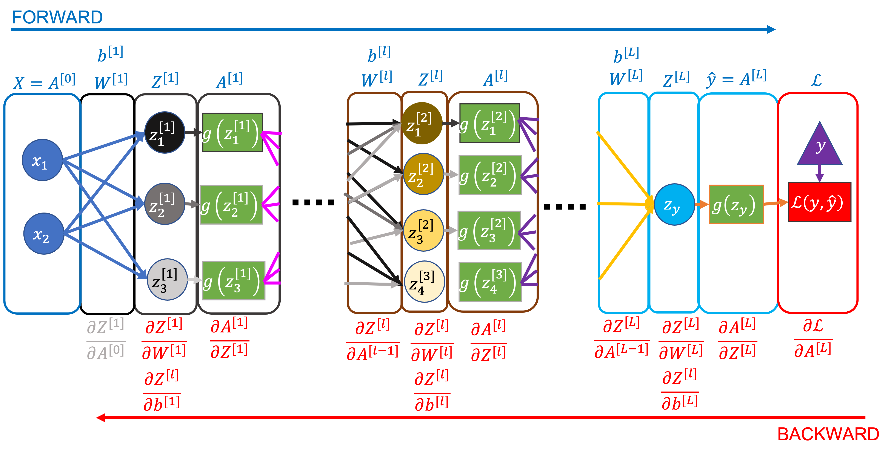

04: Matrix Notation
Contents
04: Matrix Notation#
So far we’ve explicitly written individual terms for every parameter, data feature, and intermediate value in the network in the examples. This makes it clear exactly what is going on at each step, but it gets clumsy, long, and inefficient.
Here we show how we can represent networks with matrices, creating a much simpler (if less explicit) notation.
Example Network and Definitions#
We’ll refer back to the network below throughout this section. It has an unspecified number of layers (and nodes in each layer), but we assume 2 input data features, 3 nodes in the first layer, and 1 output node for the examples.

Notation Cheat Sheet#
We have labelled the notation we’re going to start to use to represent the values/parameters in whole layers, rather than at individual nodes/connections. The terms are:
Size of the network and dataset:
\(L\) - the number of layers in the network
\(n^{[l]}\) - the number of nodes in layer \([l]\)
\(n^{[0]}\) - the number of input features (the number of nodes \(x_i\) in the input layer)
\(n^{[L]}\) - the number of outputs (one in all the networks we’ve considered so far)
\(m\) - the number of data samples per gradient descent iteration (aka the batch size)
Parameters of, and computed values in, the network:
\(\mathbf{W}^{[l]}\) - the weights (arrows) between all the activations in layer \([l-1]\) and layer \([l]\), dimensions: \((n^{[l]}, n^{[l-1]})\)
\(\mathbf{b}^{[l]}\) - the bias for all the nodes in layer \([l]\), dimensions: \((n^{[l]}, 1)\)
\(\mathbf{Z}^{[l]}\) - the linear predictor for all the nodes in layer \([l]\) for all the data samples, dimensions: \((n^{[l]}, m)\)
\(\mathbf{A}^{[l]}\) - the activation for all the nodes in layer \([l]\) for all the data samples, dimensions: \((n^{[l]}, m)\)
\(\mathbf{X} = \mathbf{A}^{[0]}\) - we can represent the input dataset as the activations of the zeroth layer
\(\mathbf{\hat{y}} = \mathbf{A}^{[L]}\) - the activations of the last layer are the predictions \(\hat{y}\)
\(\mathcal{L}(\mathbf{y}, \mathbf{\hat{y}})\) - the total loss (cost) for all the data samples, dimensions: (1)
Matrix/vector operations:
\(\mathbf{p . q}\) is the dot product of a row vector \(\mathbf{p}\) with dimensions \((1, j)\), and a column vector \(\mathbf{q}\) with dimensions \((j, 1)\), and the result is a scalar value
\(\mathbf{PQ}\) is matrix multiplication, where \(\mathbf{P}\) has dimensions \((i, k)\), \(\mathbf{Q}\) has dimensions \((k, j)\), and \(\mathbf{PQ}\) has dimensions \((i, j)\)
\(\mathbf{P * Q}\) is element-wise multiplication, where \(\mathbf{P}\) and \(\mathbf{Q}\) have the same dimensions \((i, j)\), and \(\mathbf{P * Q}\) also has dimensions \((i, j)\)
\(\mathbf{P}^T\) is the transpose of \(\mathbf{P}\), where \(\mathbf{P}\) has dimensions \((i, j)\) and \(\mathbf{P}^T\) has dimensions \((j, i)\)
Forward Pass#
Value for a single node and data sample: Dot products#
In the network above, the value of \(z_1^{[1](j)}\) (the first node in the first hidden layer) for a single data point, \((j)\), can be written as:
The first two terms on the right (multiplying the inputs by the weights) can be expressed as a dot product:
where:
\(\mathbf{w_1}^{[1]}\) is a row vector of all the weights to the first node in the first layer
\(\mathbf{x}^{(j)}\) is a column vector of all the data feature values for data sample \((j)\)
\(b_1^{[1]}\) is the bias term for the first node in the first layer
which can be expanded as follows:
and represents the same expression as the first equation above.
Values for all nodes in a layer for all data in a batch: Matrix multiplication#
By moving from vectors to matrices we can represent the terms for a whole layer (rather than a single node) and for a whole dataset in an efficient way.
Sticking to the the first layer in the network above as an example, the six weights (2 input nodes * 3 layer 1 nodes) can be represented as:
where:
each row corresponds to a node in the current layer (the 1st layer in this case) - there are \(n^{[1]}\) rows.
each column corresponds to a node in the previous layer (the zeroth layer in this case, aka the data inputs) - there are \(n^{[0]}\) columns.
the values are the weights between those nodes (e.g. the value at row 3, column 2 is the weight between the 2nd input, \(x_2\), and the 3rd node in the first layer).
And the data as:
where:
each row corresponds to a feature in the data (or more generally a node activation in the previous layer) - there are \(n^{[0]}\) rows.
each column corresponds to a data sample - there are \(m\) columns.
The linear predictor values for all the nodes in the first layer can then be expressed as:
The first term, \(\mathbf{W}^{[1]} \mathbf{X}\), is a matrix multiplication, that (by the definition of matrix multiplication and given the way we have defined \(\mathbf{W}^{[1]}\) and \(\mathbf{X}\)), contains the dot product of the inputs and the weights for every node (each of the 3 nodes in the first layer) and every data sample:
Broadcasting#
\(\mathbf{b}^{[l]}\), the last term in \(\mathbf{Z}^{[1]}\), is a column vector containing the bias for each node in the layer:
But now there’s a problem, we need to add \(\mathbf{W}^{[1]} \mathbf{X}\) and \(\mathbf{b}^{[l]}\) but they have different dimensions - \((3, m)\) and \((3, 1)\) respectively.
We want to add the same bias values for each data sample. To do this we use broadcasting (which might be familiar to you from numpy). In other words, we create a \((3, m)\) matrix by copying \(\mathbf{b}^{[l]}\) \(m\) times:
where each column is \(\mathbf{b}^{[l]}\), and there are \(m\) columns. This matrix has the same dimensions as \(\mathbf{W}^{[1]} \mathbf{X}\), so the two can now be added together.
Summary#
We’ve now seen all the structures and operations that are needed to represent a forward pass through the network for a whole batch of data.
The general form for computing the linear predictor in any layer is:
where the second line shows the dimensions of each term.
To compute the node activations \(\mathbf{A^{[l]}}\), we apply the activation function \(g\) (element-wise):
Where \(g^{[l]}\) is the activation function for layer \(l\) (different layers may use different activation functions).
Backward Pass#
We’ll start with the final matrix equations for back propagation, then work our way back to understanding why they’re correct.
Key Equations#
Terms needed for \(\partial \mathcal{L} / \partial \mathbf{Z}^{[l]}\)#
For all layers except the last (output) layer:
So:
Where \(\partial \mathbf{A}^{[l]} / \partial \mathbf{Z}^{[l]}\) is the derivative of the activation function. For example, for sigmoid activation:
For the output layer (\(L\)), the form of \(\partial \mathcal{L}/\partial \mathbf{A}^{[L]}\) depends on the the loss function used. Often the overall expression for \(\partial \mathcal{L} / \partial \mathbf{Z}^{[L]}\) (which you get by multiplying the loss and final activation function derivatives) has a convenient form. For log loss and sigmoid activation it’s:
For mean squared error loss and linear activation it’s:
Intuition - Why are these the right equations?#
You may have already noticed similarities between the equations in matrix form above and the back propagation equations without using matrix notation in the previous notebook. They are the same equations, of course, but it can be difficult to see how this emerges through matrix multiplication and other operations. I try to solidify the link between the two forms here.
Checking Dimensions#
The notation cheat sheet earlier in this notebook gives the dimensions of all the terms we’re using. Derivatives take on the same dimension as the term in the denominator, e.g.
is a matrix with the same dimensions as \(\mathbf{W}^{[l]}\), namely \((n^{[l]}, n^{[l-1]})\), where each element is the derivative of the loss with respect to a single weight.
In the full expression for the weight derivatives in a layer, we can check the dimensions make mathematical sense: $\( \frac{\partial \mathcal{L}}{\partial \mathbf{W}^{[l]}} = \frac{1}{m} \frac{\partial \mathcal{L}}{\partial \mathbf{Z}^{[l]}} \mathbf{A}^{[l-1]^T} \\ (n^{[l]}, n^{[l-1]}) = (1) * (n^{[l]}, m) \times (m, n^{[l-1]}) \)$
These are the correct dimensions for a valid matrix multiplication, which gives some reassurance that it’s sensible at least! We can repeat this for the other key equations:
Activations#
Gradient for the activation of node \(k\) in layer \(l\) for data sample \(m\), i.e. element \((k, m)\) of \(\partial \mathcal{L} / \partial \mathbf{A}^{[l]}\)):
This reads as:
The loss gradient of the activation of node \(k\) in layer \(l\) for data sample \(m\) is the sum of…
the loss gradients of the linear predictors for each node in the next layer…
multiplied by the weights between node \(k\) in layer \(l\) and all the nodes in the next layer
Linear Predictor#
This follows from the chain rule (as seen in the previous notebook), and we’ve already derived/explained the two terms on the right above.
Bias#
In the previous notebook we derived that, for a single bias term for a single data point, \(\partial \mathcal{L} / \partial b_k^{[l](m)} = \partial \mathcal{L} / \partial z_k^{[l](m)}\). The expression here computes the mean of the gradient for each bias term across the whole batch of data.
Weights#
The element \((q, p)\) of \(\partial \mathcal{L} / \partial \mathbf{W}^{[l]}\) (row \(q\), column \(p\)) contains the gradient of the weight between node \(p\) in layer \([l-1]\) and node \(q\) in layer \([l]\) (i.e. the loss gradient of \(w_{p \rightarrow q}^{[l]}\)), averaged across the whole batch of data:
For why terms like \((\partial \mathcal{L} / \partial z_q^{[l](1)} ) a_{p}^{[l-1](1)}\) are correct for computing the gradient for the weights, you can again refer back to the single data point examples in the previous notebook.